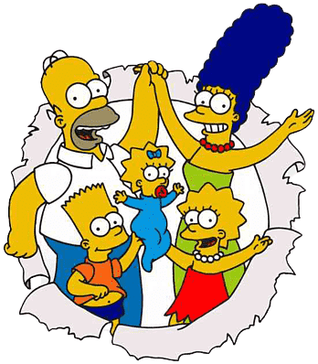

THE SIMPSONS es una serie animada ganadora del premio Emmy que sigue siendo aclamada como uno de los retratos más verdaderos y divertidos de la familia estadounidense en la televisión.
Los Simpsons, que viven en la comunidad de Springfield, incluyen a Homer, un padre cuya cabeza a menudo está gobernada por su estómago y que trabaja en la Planta Nuclear de Springfield; Marge, una madre y esposa amorosa y cariñosa que intenta mantener la paz en la familia; Bart, un niño travieso de 10 años; Lisa, una niña inteligente, filosófica y que toca el saxofón de jazz a los 8 años; y la bebé Maggie, que comenta sobre su mundo con chupadas de chupete.
THE SIMPSONS, creado por el dibujante Matt Groening, apareció por primera vez en 1987 como una serie de segmentos de 30 segundos producidos por Groening para el programa de FOX, THE TRACY ULLMAN SHOW. Se estrenó en FOX como una comedia de media hora el 14 de enero de 1990.
Las voces detrás de los personajes incluyen a Dan Castellaneta como Homer, Julie Kavner como Marge, Nancy Cartwright como Bart, Yeardley Smith como Lisa, y los habituales de la serie Harry Shearer y Hank Azaria. Las numerosas voces invitadas famosas han incluido a Meryl Streep, Winona Ryder, Michelle Pfeiffer, Elizabeth Taylor, Sting, Johnny Carson, Bette Midler, Luke Perry, los Red Hot Chili Peppers, Penny Marshall, Danny DeVito y Bob Hope.
En julio de 1995, THE SIMPSONS recibió su cuarta nominación al premio Emmy como Mejor Programa Animado, habiendo ganado el premio tanto en 1990 como en 1991. James L. Brooks, Matt Groening y Bill Oakley y Josh Weinstein son los productores ejecutivos. THE SIMPSONS es una producción de Gracie Films en asociación con Twentieth Century Fox Television.
MATT GROENING
Creador y Productor Ejecutivo de THE SIMPSONS
Matt Groening, creador y productor ejecutivo de la serie ganadora del premio Emmy de FOX, THE SIMPSONS, hizo historia en la televisión al traer la animación de regreso al horario estelar, creando una familia nuclear inmortal.
Originalmente cobró vida en 1987 en el programa de FOX, THE TRACEY ULLMAN SHOW, ganador del premio Emmy, THE SIMPSONS fue la introducción de Groening al mundo de la animación. Anteriormente, era conocido por su tira cómica Life in Hell, una representación irreverente de la vida rota que debutó en 1977 y que actualmente aparece en más de 250 periódicos en Estados Unidos y Canadá.
En 1993 fundó Bongo Comics Group, donde se desempeña como editor de cuatro títulos de cómics: Simpsons Comics, Itchy and Scratchy Comics, Bartman y Radioactive Man, así como una serie especial de Lisa Comics y Krusty Comics. Luego se siguieron una exitosa serie de tarjetas de intercambio.
Además de producir su tira semanal, mantenerse al tanto de las demandas de producción en curso de la serie de televisión semanal y reunirse regularmente con el equipo de Bongo, Groening supervisa todos los aspectos de la licencia y comercialización de THE SIMPSONS.
Los libros más vendidos de Groening, basados en Life in Hell y THE SIMPSONS, incluyen Love is Hell, Work is Hell, School is Hell, The Big Book of Hell, Akbar and Jeff's Guide to Life, Love is Hell 10th Anniversary Edition, Binky's Guide to Love, The Simpsons Xmas Book, The Simpsons Rainy Day Fun Book, Making Faces With The Simpsons, Bart Simpson's Guide to Life, Greetings From the Simpsons, The Simpsons Uncensored Family Album, Cartooning With The Simpsons, la revista Simpsons Illustrated y el cómic Simpsons Comics and Stories.
Nativo de Portland, Oregon, nacido el 15 de febrero, Groening reside con su familia en Los Ángeles.
JAMES L. BROOKS
Productor Ejecutivo de THE SIMPSONS
James L. Brooks es ganador de tres premios de la Academia y doce premios Emmy. Su compañía de producción, Gracie Films, llevó THE TRACEY ULLMAN SHOW, THE CRITIC y THE SIMPSONS a Fox Broadcasting Company.
Brooks comenzó su carrera en televisión como escritor y luego produjo clásicos como Room 222, The Mary Tyler Moore Show, Rhoda, Lou Grant, Taxi y The Associates. También escribió y produjo la película de televisión Thursday's Game.
Actualmente es productor ejecutivo de la película Bottle Rocket. Brooks comenzó a trabajar en películas en 1979, escribiendo el guion de Starting Over, que coprodujo con Alan Pakula. En 1983 ganó los mayores honores de la industria con tres premios de la Academia: como escritor, productor y director de Terms of Endearment, que también ganó el premio a la Mejor Película. En 1987 escribió, produjo y dirigió el éxito cinematográfico de Twentieth Century Fox Broadcast News, que ganó los premios de la Asociación de Críticos de Teatro de Nueva York a la mejor película, guion y director. También fue nominada al premio de la Academia como mejor película y mejor guion.
A través de Gracie Films, Brooks fue productor ejecutivo de las películas Say Anything y The War of the Roses. También coprodujo la exitosa comedia Big de Twentieth Century Fox con Robert Greenhut. En 1990, Brooks produjo y dirigió su primera obra de teatro, Brooklyn Laundry, una producción en Los Ángeles protagonizada por Glenn Close, Woody Harrelson y Laura Dern.
La compañía de Brooks, Gracie Films, hizo un acuerdo general con Sony Pictures en 1990. Brooks escribió, produjo y dirigió la película I'll Do Anything, protagonizada por Nick Nolte, Albert Brooks y Julie Kavner. También produjo la serie de televisión Phenom.
BILL OAKLEY Y JOSH WEINSTEIN
Productores Ejecutivos de THE SIMPSONS
Bill Oakley y Josh Weinstein, ambos de 29 años, han estado escribiendo comedia juntos durante 15 años. Su carrera comenzó en St. Albans, su escuela secundaria en Washington, D.C., donde fundaron y editaron el Alban Antic, una de las primeras revistas de humor de escuelas secundarias en el país.
Bill asistió a la Universidad de Harvard, donde fue vicepresidente de la Harvard Lampoon, y Josh asistió a Stanford, donde fue presidente de su revista de humor, el Stanford Chaparral. La asociación continuó durante los veranos, cuando Josh visitaba Cambridge para unirse a Bill en la escritura de parodias de Lampoon de USA Today, Time y otras publicaciones. Los dos también editaron el primer número conjunto de Lampoon y Chaparral en 1986.
Después de la universidad, Bill y Josh escribieron para Spy, National Lampoon y AMERICAS MOST WANTED antes de mudarse a Los Ángeles. En 1992 se unieron a THE SIMPSONS en su cuarta temporada y desde entonces han escrito 12 episodios, incluyendo Lisa vs. Malibu Stacy, Sideshow Bob Roberts y Who Shot Mr. Burns?. También han sido editores de historia y productores supervisores, y actualmente son productores ejecutivos de la octava temporada del programa.
Josh, recientemente casado, reside en Los Ángeles con su nueva esposa, Lisa. Bill, también casado, vive en Pasadena con su esposa, Rachel.
Derechos de autor y TM, 1996, FOX Broadcasting Company.